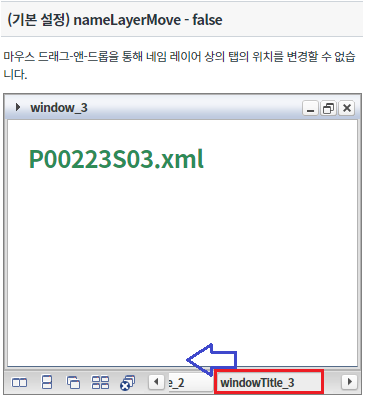
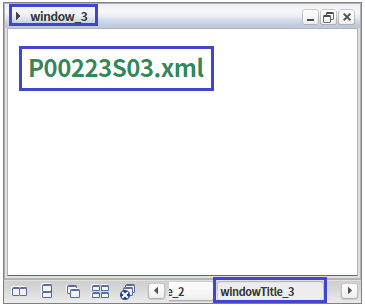
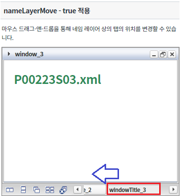
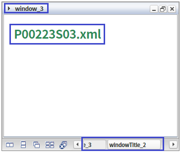
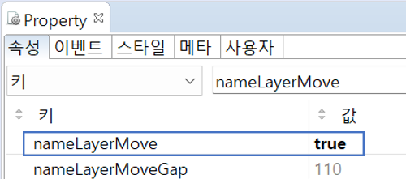
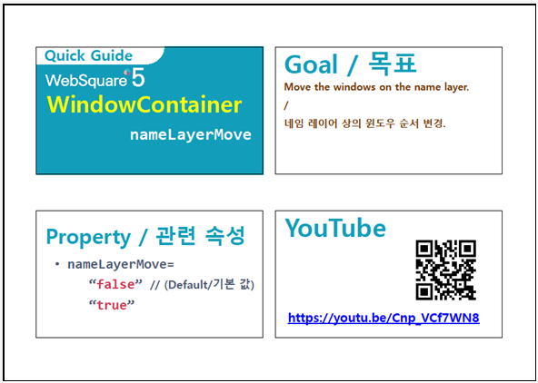

마우스 드래그-앤-드롭을 통해 네임레이어 상의 탭의 위치를 변경하는 예제입니다. 이 기능은 아래의 속성으로 사용할 수 있습니다. - nameLayerMove : 네임레이어 상의 윈도우 순서 변경 여부
속성 'nameLayerMove' 미사용
속성 'nameLayerMove' 사용
마우스 드래그-앤-드롭을 통해 네임레이어 상의 탭의 위치를 아래 이미지와 같이 이동합니다.
[브라우저(Chrome) 실행 예시]

마우스 드래그-앤-드롭하여도 네임레이어 상의 탭의 위치가 변하지 않은 것을 확인합니다.
[브라우저(Chrome) 실행 예시]

마우스 드래그-앤-드롭을 통해 네임레이어 상의 탭의 위치를 아래 이미지와 같이 이동합니다.
[브라우저(Chrome) 실행 예시]

마우스 드래그-앤-드롭으로 네임레이어 상의 탭의 위치가 아래와 같이 변한 것을 확인합니다.
[브라우저(Chrome) 실행 예시]

WindowContainer의 속성을 정의합니다.
[필수] nameLayerMove="true" //[default:false, true] 네임레이어 상의 윈도우 순서 변경을 마우스 드래그-앤-드롭을 통해 가능하게 하는 속성입니다.
그림 1.웹스퀘어5 SP5 스튜디오의 Property View(속성창) 예시

<!-- windowContainer 의 소스 본문 예시 --> <w2:windowContainer nameLayerMove="true" id="wgc_exam_2"> <!-- 생략 --> </w2:windowContainer>
nameLayerMove
[웹스퀘어5 SP5 개발 가이드] WindowContainer
링크 : https://docs1.inswave.com/sp5_user_guide#7214a34e26fc99d7
[웹스퀘어5 SP5 개발 가이드] WindowContainer 윈도우 순서 변경
링크 : https://docs1.inswave.com/sp5_user_guide#fc3c7d9f99971e07
WindowContainer 윈도우 순서 변경
링크 : https://youtu.be/Cnp_VCf7WN8
